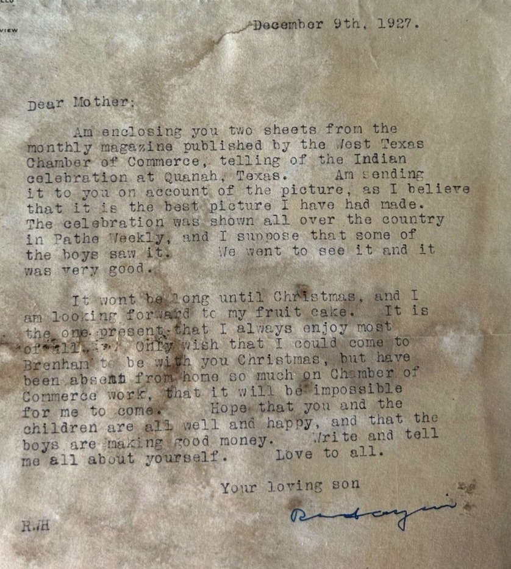

Our namesake
Who Was Nellie
Every bag of frass we ship carries her name — not as a brand, but as a promise. Nellie's life was proof that working with the land, not against it, can sustain a family through the hardest seasons.

A Widow at Twenty
Nellie was barely twenty years old when she became a widow on the Blackland Prairie of Texas, left alone with a young son and a stretch of dark, heavy soil that had already tested generations before her. The Blackland Prairie — that long ribbon of rich, black clay running through central Texas — was unforgiving country. It cracked in drought, turned to mud in rain, and demanded everything from the people who tried to make a living on it.
But Nellie stayed. She didn't leave for a city job or remarry out of desperation. She planted her feet in that dark soil and decided she would make it provide.
Working the Land
Over the years that followed, Nellie's household grew. She took in family, cared for the children who needed caring for, and built a home that was always full — full of people, full of work, full of food grown from the garden she tended with fierce attention. She raised vegetables, kept animals, put up preserves, and made sure nobody in her care went hungry, even when money was scarce.
She understood the soil the way only someone who depends on it can. She composted before anyone called it composting. She rotated crops because she could see what the land needed. She saved seeds and shared surplus with neighbors. The garden wasn't a hobby — it was how her family ate, and she treated it with the seriousness it deserved.
Raising a Family That Gave Back
What set Nellie apart wasn't just survival — plenty of people survived hard times on the prairie. It was what she built while surviving. She raised her children and the others in her care to be thoughtful, engaged members of their communities. They grew up understanding that you take care of your neighbors, that you show up when there's work to be done, and that the land gives back what you put into it.
Her children carried those values into their own lives — into schools, churches, local organizations, and the towns that grew up across the Blackland Prairie. They were known as people who could be counted on, and that reputation traced straight back to the woman who raised them in a garden that never stopped producing.
Why Her Name Is on Our Bags
Nellie's Garden Frass Co. exists because we believe what Nellie believed: that healthy soil is the foundation of everything. She didn't have a laboratory or a degree in agronomy. She had observation, patience, and an unwillingness to take shortcuts with the land that fed her family.
When we cure frass in Austin County, when we source spent grain from Texas breweries, when we talk about building soil biology instead of just feeding plants — we're following a tradition that Nellie practiced every day of her life on the Blackland Prairie. She proved that one person, working thoughtfully with the land, can feed a family and shape a community for generations.
She didn't just feed her family — she fed the soil that fed them, and taught every child in her care to do the same.
Continue Nellie's legacy.
Every bag of Nellie's Garden frass carries forward the same principle she lived by: work with the land, not against it. Try it in your own garden and see what healthy soil can do.